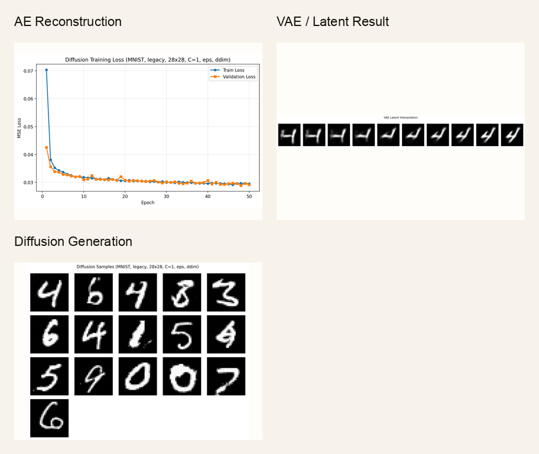
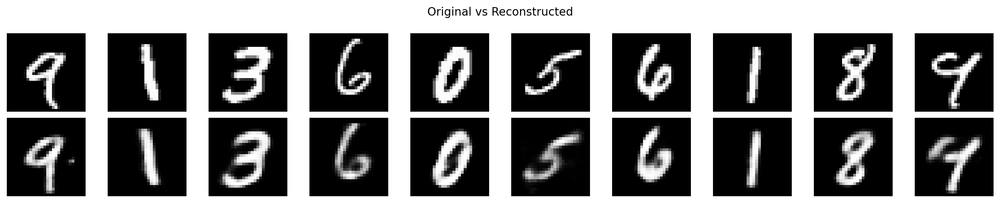
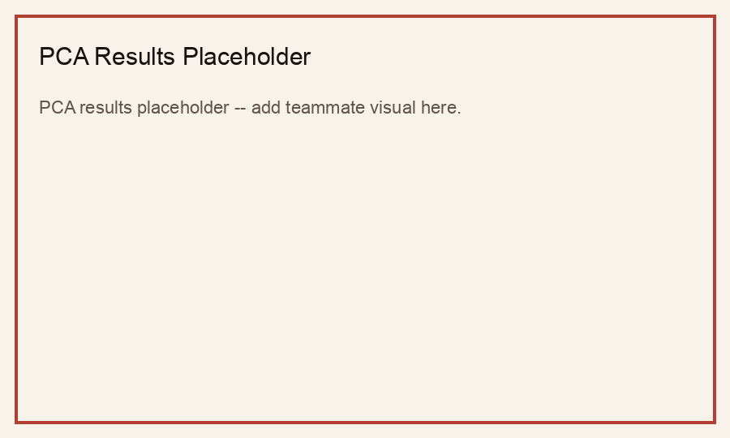
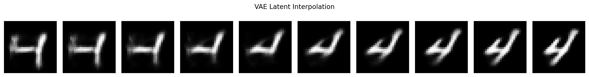
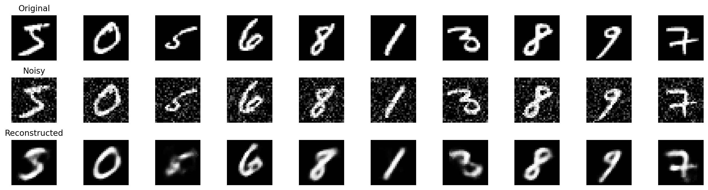
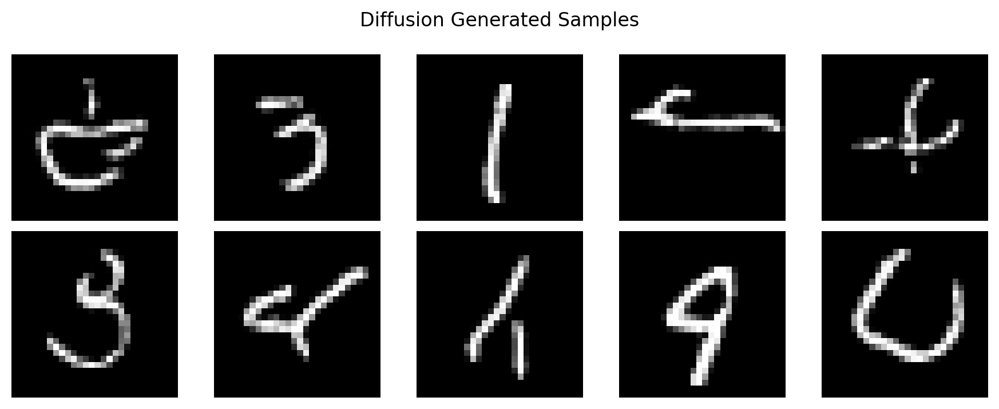
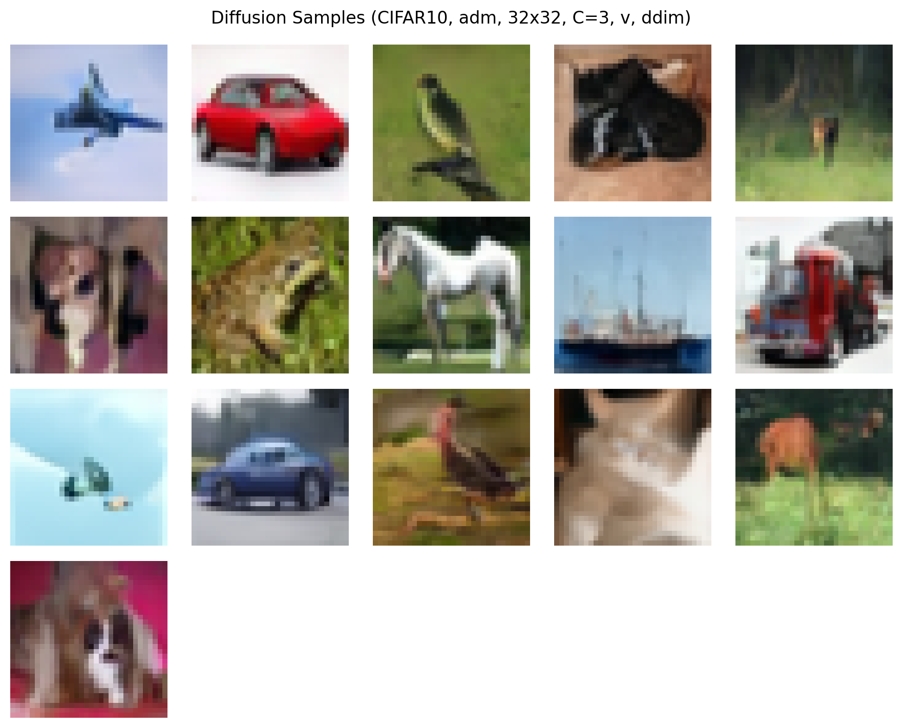
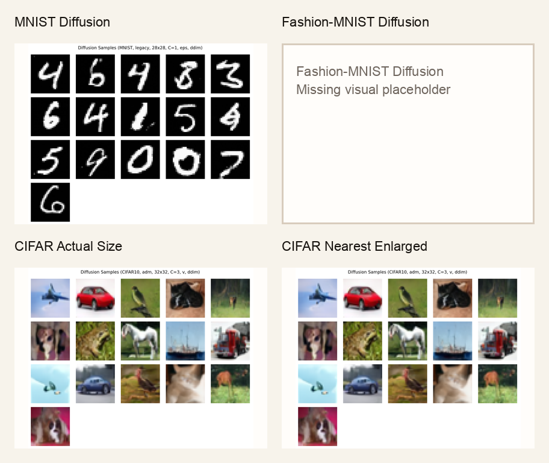

PCA MNIST
Placeholder for teammate PCA reconstruction visuals.
PCA vs autoencoders

Main comparison
Placeholder for teammate PCA reconstruction visuals.

Autoencoder reconstruction at latent dimension 16.

Reserved for final PCA vs AE side-by-side comparisons.
Autoencoder work
Latent compression and image reconstruction.
Reconstruction plus latent sampling and interpolation.
Noise robustness through denoising reconstruction.

Smooth latent-space transitions between generated examples.

Recovering clean images from noisy inputs.
Extra credit

Simple grayscale images produce stronger generations.

Native 32x32 output shown without invented detail.
Enlarged with nearest-neighbor interpolation to avoid smoothing blur.

Combined diffusion panel with placeholders where source visuals are still missing.
Runbook
python train.py --model ae --dataset mnist --latent-dim 16python train.py --model vae --dataset mnist --latent-dim 16python train.py --config configs/diffusion/mnist.yaml
python train.py --config configs/diffusion/fashion.yaml
python train.py --config configs/diffusion/cifar10.yamlpython scripts/collect_report_assets.py